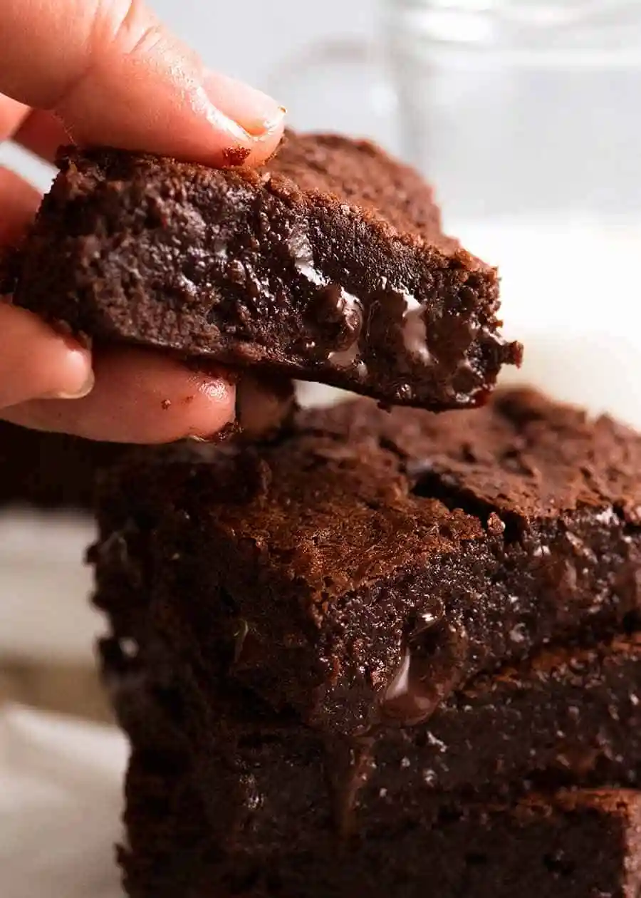
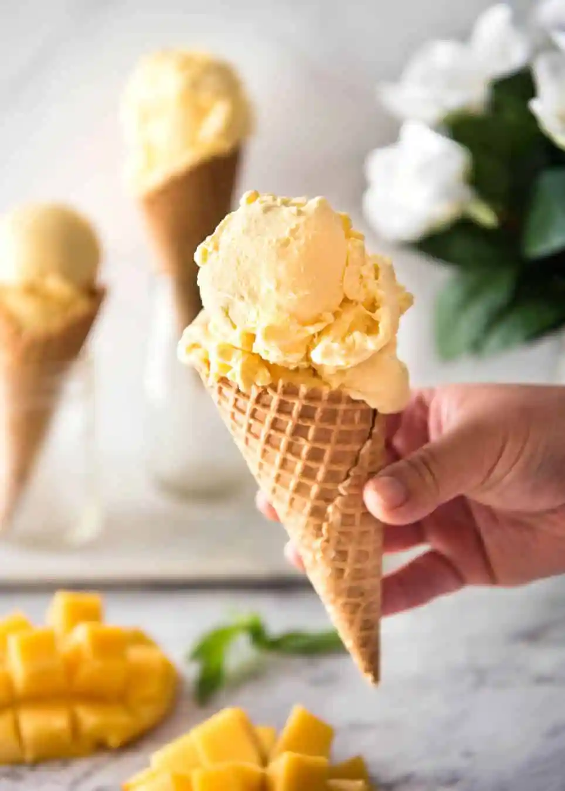
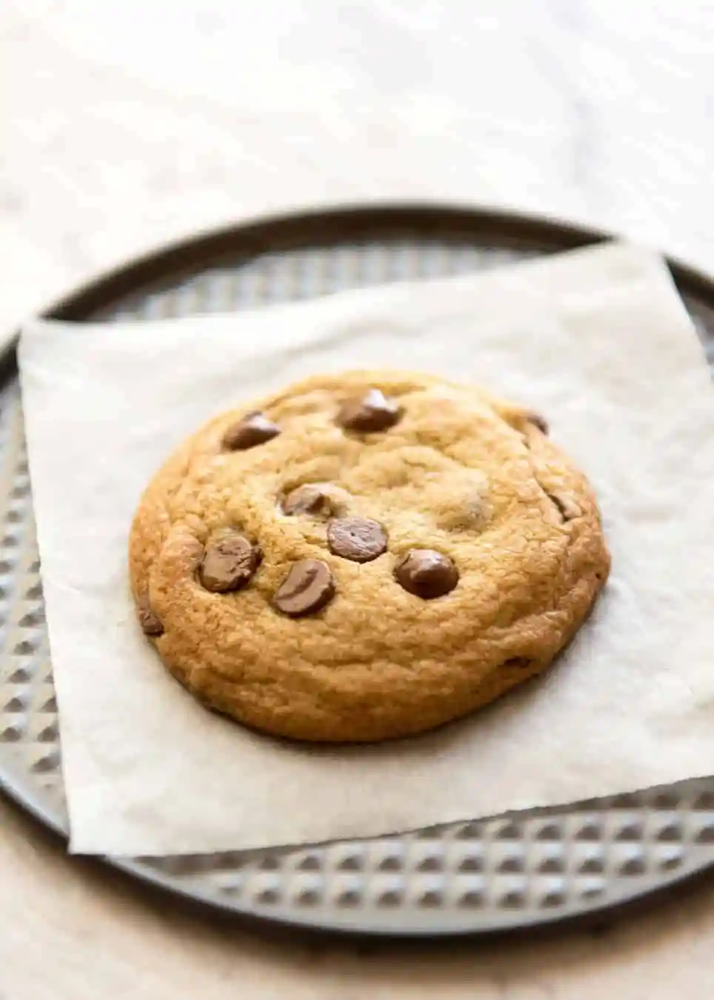

Chris's Recipe Book
Contents:
Brownies
Brownies, a beloved dessert, epitomize indulgence with their rich, chocolatey flavor. Their dense, fudgy texture delights the palate, while the crispy edges add a satisfying crunch. Brownies evoke memories of warmth and comfort, symbolizing the simple joys in life. A treat cherished by many, they offer a moment of pure bliss.
Ingredients

- 200g / 14 tbsp unsalted butter (1 3/4 US sticks)
- 200 g / 1 1/4 cups dark chocolate chips (7 oz) (Note 1)
- 1 cup (175g) brown sugar , loosely packed
- 3 eggs , lightly beaten
- 1 tsp vanilla extract
- 1/2 cup (75g) plain flour
- 1/4 cup (30g) cocoa powder
- Pinch of salt
- 180g/6oz dark chocolate block/bar (optional) , chopped into chunks rather than shards, (bittersweet or semi-sweet, cooking chocolate) (Note 2)
Instructions
- Preheat oven to 180°C/350°F (160°C fan forced).
- Spray a 20cm/8" square tin with oil and line with baking/parchment paper with overhang (Note 2).
- Place butter and chocolate chips in a heatproof bowl, microwave in 30 second bursts (takes me 1m 30 sec) until melted. Stir until smooth.
- Add sugar and vanilla, mix, then add eggs and mix well until smooth and molten.
- Add flour, cocoa and salt and stir until smooth. Stir in chopped chocolate, pour into pan.
- Bake 24 minutes for really gooey in the centre, 28 minutes for fudgey but still very moist (my favourie, shown in video & photos), 32 minutes for moist fudge-cake-like. (See in post for toothpick testphotos).
- If you didn't use the extra chocolate for stirring in, reduce cook time by 2 minutes.
- Rest for 10 minutes before lifting out of the pan. Allow to cool for at least 20 minutes before cutting. Store in an airtight container for 4 days (bet they don't last that long!) or freeze for 3 months.
NOTES
- Chocolate - Use cooking chocolate chips from the baking section of the supermarket, not eating chocolate.
Also use cooking chocolate bars for the add in chunks (though eating chocolate will work here too, just that not all types/brands will melt so you get a smooth molten ooze)
- Lining pan - Have overhang so you can lift the brownies out of the tin.
- Baking measures - Cups, tbsp and tsp measures differ slightly in size between countries. For most recipes on my blog, the difference is not enough to make a difference, or the difference is relative and consistent across all ingredients in a recipe. Where the difference DOES matter, I specify the measurements for different countries, like I do for my Chewy Oatmeal Raisin cookies. For this recipe, it DOES NOT matter so you can use cups or weights per the recipe, no matter which country you are in. The only exception is Japan, please use the weight measures, not cups.
- Storage - airtight container for 4 days, refrigerate only if it's very hot. Or freeze for up to 3 months.
Mango Ice Cream
Mango ice cream, a tropical delight, enchants with its vibrant hue and luscious flavor. Creamy and refreshing, it offers a tantalizing fusion of sweetness and tanginess. Each spoonful transports taste buds to sun-kissed orchards, evoking memories of lazy summer days and pure bliss. A true indulgence for the senses.
Ingredients

- 2 large mangoes , ripe and juicy - to make 2 cups puree (Note 1)
- 395 g / 14 oz sweetened condensed milk (1 can)
- 2 cups thickened cream / heavy cream / whipping cream , cold
- 1/8 tsp yellow liquid food colouring (optional) (Note 5)
Instructions
- Dice the flesh of the mango. Puree using a blender, food processor or stick blender then measure out 2 cups of mango puree (about 2 1/4 cups of diced mango).
- Pour puree into a non stick skillet over medium low heat. Cook, stirring constantly, for 8 - 10 minutes or until it reduces by half. The test is when you can drag a wooden spoon across the skillet and the path remains there for a second. Or measure out the puree to ensure it's reduced to at least 1 cup - less is even better!
- Cool puree.
Ice Cream
- Combine cooled mango and condensed milk in a bowl. Add food colouring if using. Whisk until combined.
- Beat cream with a hand held beater or stand mixer until stiff peaks form.
- Take a scoop of cream and put it in the mango mixture. Fold through until mostly combined - lumps is fine (this is just to lighten it up a bit).
- Then pour the mango mixture into the cream. Fold through (see video) rather than mixing vigorously like you would cake batter, until lump free. This will take a few minutes.
- Pour into a container (preferably with a lid). I recommend glass, if you can, or other non reactive container.
- Place a piece of baking / parchment paper on the surface. Then place lid on or using cling wrap.
- Freeze for 12+ hours.
- Remove parchment paper. Stand for 5 minutes to soften slightly, then scoop and serve!
- If frozen for 24 hours or longer, it will need a couple of extra minutes to soften to a scoop able consistency.
NOTES
- I found that there is only so much mango that can be added into the mixture and maintaining the creaminess of the ice cream. So the mango flavour is not as super intense as I hoped to achieve.
So the key to this recipe to get a good mango flavour in the ice cream is using ripe juicy mangoes with a strong mango flavour. I have expert advice from Aussie Mangoes that the mangoes with the most intense mango flavour and vibrant colour are Kensington Prides, Honey Golds and Pearls. I made mine with Honey Golds which are my favourite. However, this can be made with any type of mango - as long as they are ripe and juicy! -- KEY POINT!
- Calypso mangoes are the most common ones sold in Australia supermarkets but I personally don't recommend them for this recipe - the mango flavour isn't as strong as other varieties.
- Reducing the mango puree by half is key to a. intenser mango flavour in the ice cream 2. avoiding tiny fine bits of icicles (really tiny, barely there) in the ice cream. This is because using plain pureed mango that hasn't been reduced has a much higher water content and the water is what causes the icicles.
You can actually skip the step of reducing the mango puree. Just be aware that you will notice some fine bits of iciness in the ice cream. Doesn't bother me at all, it is still SUPER creamy!!
- Between 12 to about 18 hours of freezing, the ice cream only needs a couple of minutes to soften before being easy to scoop and serve. After that, the ice cream becomes harder and will need around 5 minutes. The unique thing about this recipe is that the ice cream doesn't go from rock hard to melted liquid, it will soften so it's scoopable like traditional ice cream you buy in tubs from the shops!
- OTHER FLAVOURS : You can skip the mango and just fold condensed milk into the whipped cream and add 2 tsp pure vanilla - this will make a creamy vanilla ice cream. Go wild with add ins like choc chips, nuts etc! To make a chocolate version, I use 1/2 cup unsweetened cocoa powder (or 1/3 cup Dutch processed cocoa powder), whisked into the condensed milk, the folded with the cream.I have not tried other pureed fruits yet and I think it will require some experimenting to make it work. Mangoes works great because a. it is one of the most intense flavoured fruits (did you know that? 🙂 ) b) it purees smoothly and can be reduced without losing flavour. Whereas, for example, strawberries don't actually have a very intense flavour. Watermelon has an incredibly high water content and I don't think reducing would work well. Etc etc. So I can't provide a guide for how to make this recipe with other fruits.
- This is optional, if you want a nice mango yellow colour. I didn't use it in the photos because the Honey Golds I used were such an intense colour but I did use it in the video.
Chocolate Chip Cookies
Chocolate chip cookies, an iconic delight, captivate with their golden-brown exterior and gooey centers. Each bite offers a perfect balance of sweet dough and rich chocolate, a comforting embrace for the soul. Whether warm from the oven or enjoyed with a glass of milk, these cookies evoke cherished memories and pure happiness.
Ingredients

- 1 3/4 cups plain / all purpose flour
- 1 tsp salt
- ½ tsp baking soda (bi carb soda)
- 175g / 12 tbsp unsalted butter , cut into 2 cm/ 4/5" cubes (1.5 US sticks / 6 oz)
- 1/2 cup brown sugar , packed (light or dark) (Note 1)
- 1/2 cup caster sugar (US: granulated sugar)
- 1 egg
- 1 egg yolk
- 2 tsp vanilla extract
- 1 1/4 cups chocolate chips , separated (US: semi sweet chocolate chips or chunks)
Instructions
- Preheat oven to 180C / 350F (standard) or 160C/320F (fan / convection). Place oven shelf in the middle of the oven.
- Line 2 trays with baking / parchment paper.
- Whisk the flour, salt and baking soda in a bowl.
- Place the butter in a large heatproof bowl. Microwave until the butter is almost fully melted (25 sec for room temp butter, 40 sec for fridge cold butter on high).
- Whisk to finish melting the butter. (Note 2)
- Add brown and white sugar, whisk energetically for 15 seconds.
- Add egg, yolk and vanilla, whisk well for 15 seconds.
- Add flour mixture and mix until flour is almost fully incorporated.
- Add 1 cup chocolate chips, stir to disperse and flour is fully incorporated. Batter will be quite loose.
- Stand for 5 minutes for batter to firm up a bit so it is scoop-able into mounds. (Note 3)
- LARGE COOKIES: Scoop up a level ice cream scoop / 3 tbsp / 1/4 cup (Note 4) and place on baking trays 5cm / 2" apart - 13 balls. Top with remaining choc chips (these remain on surface once baked = prettier).
- SMALL COOKIES (26 - 30): Scoop up 1.5 tbsp (heaped tbsp measure) OR 1/2 an ice cream scoop (this works well). Place on baking trays 4cm / 1.75" apart, top with choc chops.
- Bake 1 tray at a time. LARGE COOKIES: Bake for 8 minutes, then rotate the tray and bake for 3 minutes (11 minutes in total). SMALL COOKIES: Bake 6 minutes, turn then bake 3 minutes (9 min total). The cookies should be just golden on the edges and pale golden on top. They will be slightly puffed up.
- Cool on the tray - they finish cooking. They will lose the puffiness while resting. Dig in and get your cookie fix!
NOTES
- I switch between light and dark brown sugar, I use whatever I have. If I had both, I probably use light over dark more often. The flavour difference is not noticeable to me. Light brown sugar will produce a slightly paler cookie which does suggest its softness.
- If the butter is fully melted in the microwave so it's transparent when you take it out, the cookie is not quite as soft. Not a deal breaker, just a little tip that makes a difference!
- FIRMING UP BATTER: While the butter is warm, the batter is quite loose (see video). Standing for just 5 minutes firms up the batter, turning it into a soft cookie dough so when you drop mounds onto the tray, they stay in a mound shape. If it is super hot where you are, you may need to refrigerate for a bit.
- A standard ice cream scooper is 3 tablespoons. The ones with levers like what I use in the video are a terrific utensil that I use more frequently for things like cookies, pancakes and even meatballs more than I do ice cream!
You can also make smaller cookies and I will update this recipe with a guide for baking times for different size cookies in the near future - there are cookie baking plans for this weekend!
Chocolate Pudding
Chocolate pudding, a velvety sensation, delights with its smooth texture and rich cocoa taste. Silky and decadent, it melts in the mouth, leaving a lingering sweetness. Whether warm or chilled, each spoonful is a moment of pure indulgence, satisfying cravings and igniting joy with its irresistible allure.
Ingredients
Topping
- 1 cup (175g) brown sugar , loosely packed (Note 1)
- 1/4 cup (30g) cocoa powder , unsweetened (Note 2)
- 1 1/4 cups (315ml) boiling water
Batter
- 1 cup (150g) plain flour (all purpose flour)
- 2 1/2 tsp baking powder
- 1/3 cup (70g) white sugar , preferably caster/super fine but ordinary ok
- 1/4 cup (30g) cocoa powder , unsweetened (Note 2)
- Pinch of salt
- 1/2 cup (125ml) milk
- 50 g / 4 1/2 tbsp butter , melted
- 1 egg
- 1 tsp vanilla extract
Instructions
- Preheat oven to 170C/335F (standard) / 150C/305F (fan forced / convection).
- Grease a 5 - 6 cup baking dish with butter. (Note 3)
- Topping: Whisk brown sugar and cocoa in a bowl, set aside.
- Whisk flour, baking powder, caster sugar, cocoa powder and salt in a bowl.
- In a separate bowl or jug, whisk together the butter and milk, then whisk in the egg and vanilla.
- Pour the egg mixture into the flour mixture. Mix until combined - it will be a thick batter.
- Spread into baking dish. Sprinkle with sugar / cocoa mixture. Shake gently to spread out thinly.
- Carefully pour the hot water over the back of a dessert spoon all over the top of the pudding - see photo in post or video below recipe. (Note 4)
- Transfer to oven and bake for 30 minutes, or until the top of the cake springs back when poked lightly. The top will be a bit crusty, like the top of brownies.
- Remove from oven, stand for just a few minutes (no more!), then serve immediately. (Note 5)
NOTES
- Light or dark brown sugar is fine.
- Use Dutch Processed cocoa powder if you can. It's the up market cocoa powder, it's darker and ha
- 5 to 6 cups is around 1.25 - 1.5 litres / quarts. The dish pictured is 25 x 20 x 4.5 cm / 10 x 8 x 2.75". I often make this in a 20 x 20cm / 8 x 8" square pan or baking dish which yields a slightly thicker cake.
- The purpose of pouring the water over the spoon as you pour it over the top of the pudding is to try to try to make the water pour gently onto the surface so you can a smooth surface. As you can see from my photos, I am hopeless at this and I have no shame about the nubbly surface of my pudding. In fact, I rather like it it - more crackly brownie-like bits!
- The pudding needs to be served warm because the longer it stands, the more the sauce is absorbed into the cake and thickens up. Leftovers are lovely if reheated in the microwave because the chocolate becomes all melty again, but you don't get as much sauce as when it is made fresh.
- I like to serve mine with ice cream or cream and strawberries. Sometimes I dust it with icing sugar / confectionary sugar to make it look prettier.
This was made by Chris Soans